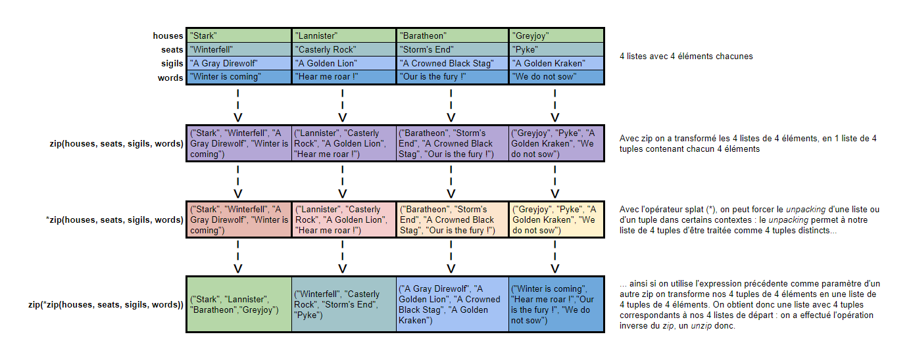

Notes d'apprentissage de Python : zip et unzip
Contenu
Contexte
Python est un langage de programmation très abordable que l’on démarre en programmation ou que l’on connaisse déjà d’autres langages. Néanmoins, ce n’est pas parce qu’un langage est abordable qu’il n’a pas ses propres idiomes et qu’il n’y a pas des trucs & astuces à connaître et à retenir.
Ci-après, une petite note d’apprentissage de Python, sur la fonction zip. Il faut noter que c’est un billet relativement court, je l’ai un peu compressé !
Ce qui m’a donné matière à faire ce billet, c’est une remarque dans A Whirlwind Tour of Python dans la chapitre 10 sur les itérateurs
Using this trick lets us answer the age-old question that comes up in Python learners’ forums: why is there no unzip() function which does the opposite of zip()? If you lock yourself in a dark closet and think about it for a while, you might realize that the opposite of zip() is… zip()!
J’ai voulu creuser la question pour bien visualiser les choses et être sûr que j’avais bien compris. C’est parti regardons de plus près ce à quoi correspond cette fonction zip et son pendant unzip.
{kind=link}
NB : c’est du Python 3 qui est utilisé.
Just zip it
L’image animée ci-après sur le fonctionnement d’une fermeture éclair illustre parfaitement l’essence de ce que fait la fonction zip. Néanmoins nous allons élaborer un peu plus.
{kind=link}
La fonction zip permet de transformer un séquence de listes (ou de tuples) en une liste de tuples. Cela sera plus clair avec un premier exemple. Nous avons la liste des nucléotides de l’ADN (réduit à la lettre qui les représente) et dans le même ordre la liste des nucléotides de l’ARN leur correspondant. Je veux les regrouper en une liste de couple. Nous allons pouvoir utiliser zip
|
|
Ce qui nous donne dans la console quand on exécute le script :
|
|
Comme on peut le voir à la ligne Résultat de l'application de zip sur les 2 listes : <zip object at 0x0000022A411419C0>, la fonction zip retourne un itérateur.
On peut donc réaliser un unpacking des valeurs de l’itérateurs avec l’opérateur splat * (Je vous recommande le billet L’opérateur splat (l’étoile: *) en Python sur ce sujet), le convertir en liste ou en tuple, le parcourir avec une boucle for (et cela fonctionnerait bien sûr avec une compréhension).
Il est également intéressant de noter que comme une liste ou un tuple de pairs d’éléments peut-être converti directement en un dictionnaire, cela fonctionne également avec zip, comme l’illustre le dernier exemple avec dict(zip(dna_nucleotides, rna_nucleotides))) dans lequel le résultat de notre zip est directement transformé en dictionnaire.
Got more examples ?
La fonction zip peut prendre en paramètres plus de 2 itérables, comme l’illustre l’exemple ci-après. Il faut également noter au passage que zip ne retourne pas directement une liste mais un objet itérable. Il est donc nécessaire de le transformer en liste ou en tuple pour l’afficher directement dans un print ou bien sûr de l’utiliser dans un for ou une compréhension). Il est également possible d’utiliser l’opérateur splat * pour réaliser un unpacking de l’itérable créer par zip. L’exemple ci-après illustre ces différents cas.
|
|
Ce script donne l’affichage suivant dans la console :
|
|
Where is my unzip ?
La fonction zip permet de transformer plusieurs séquences en une séquence de tuples, chaque élément de ces tuples venant éléments à la même position de chacune de ces listes. Maintenant si je veux faire l’opération inverse : j’ai une liste de tuples de taille identique et je veux en obtenir autant de listes, constitué des éléments à la même position dans chacun des tuples de départ.
Facile en utilisant unzip, cela semble cohérent comme nom pour l’opération inverse !
Juste un soucis, unzip n’existe pas en Python !
Alors, comment faire ? Pas de panique, si la fonction n’existe pas en Python, il y a une bonne rasion, c’est qu’on n’en pas vraiment besoin !
Et oui, il va suffire d’utiliser zip … enfin presque, on va être aider par l’opérateur de unpacking.
Avec * on peut forcer le unpacking de notre séquence de tuples, on a ainsi plusieurs tuples, plutôt qu’une liste de séquence de tuples. En appliquant zip à nouveau sur ces tuples, on créé une nouvelle séquence de tuples, cette séquence correspond à la séquence de nos listes de départ (ok, les listes ont été transformées en tuples au passage mais c’est un détail).
On peut ensuite par exemple, faire le unpacking du résultat dans des variables et on retrouve nos listes de départ (transformées en tuples).
En continuant sur l’exemple du paragraphe précédent, voici ce que l’on pourrait écrire :
|
|
Ce qui nous donne si on exécute ce code :
|
|
Synthèse en image
Un petit récapitulatif de ce qui vient d’être présenté : ce n’est pas compliqué mais ce n’est pas toujours très simple à visualiser.

Si vous trouvez l’image trop petite pour une lecture confortable la voici en [PDF|XLSX|ODF]
A ne pas zapper
Il y a encore quelques particularités de la fonction zip que nous n’avons pas abordées.
La fonction zip peut être utilisé avec des séquences infinies : ce que produit zip est un itérable et tant que vous n’essayez pas de réaliser la séquence de manière brutale en la transformant en liste ou en essayant de faire un unpacking dessus, il n’y a pas de soucis : vous avez un itérable qui représente une séquence potentiellement infini. Dans l’exemple ci-après j’utilise count de itertools pour générer des listes de nombres entiers infinis et j’utilise la fonction islice de itertoolségalement pour prendre une tranche de taille définie (ici 10) de l’iterator produit par zip. En effet, on ne peut pas slicer directement avec la syntaxe [start🔚step] utilisable avec les listes, les tuples ou les chaînes.
|
|
|
|
Si vous appliquez zip sur des séquences de tailles différentes, que se passe-t-il ? Eh bien, le zip s’effectue par rapport à la séquence qui a la plus petite taille, il n’y aura pas plus de tuples que d’éléments dans la plus petite des listes. Cela sera probablement plus clair avec l’exemple qui suit :
|
|
On obtient ainsi qu’une séquence de 3 tuples, avec les 3 premiers éléments de chaque liste, c’est la plus petite liste qui a déterminé la contrainte sur la taille de la séquence produite.
|
|
Et si je veux zipper par rapport à la liste qui a la plus grande taille ? Je fais appel à zip_longest de itertools
|
|
Cette fois-ci c’est la plus longue liste qui impose les conditions, les valeurs manquantes pour compléter les tuples sont remplacées assez logiquement par None.
|
|
Avant de partir
Les fonctions zip et unzip font parties des outils de manipulation de séquences qu’il est intéressant de connaître notamment dès qu’on souhaite manipuler des séquences d’éléments sous forme d’iterator avec des fonctions comme map, filter et companie, dans des compréhensions) ou avec des generators. Il est intéressant de trouver la fonction en Python directement et de pouvoir faire le unzip facilement.
Les exemples du billet sont disponibles sous forme de gist.
Références
Livres
Articles et billets
Images
Les images de fermetures éclair sont des images sous licence Creative Commons Attribution-ShareAlike
Auteur TGITS
Modifié 2020-11-22